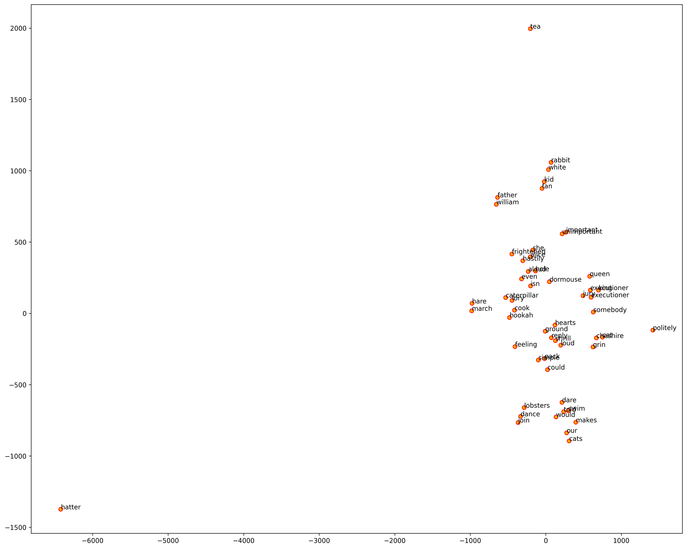
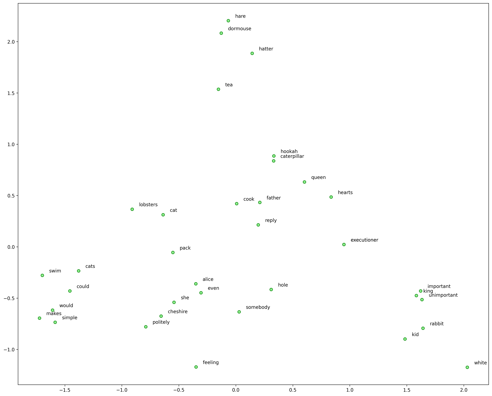

Assignment X: Word Embeddings¶
Question 1¶
Alice in the wonderland
verbs?
word embeddings/
Alice Corpus¶
import nltk
from nltk.corpus import gutenberg
import re
import pandas as pd
from gensim.models import word2vec
import numpy as np
import matplotlib as mpl
import matplotlib.pyplot as plt
mpl.rcParams['figure.dpi']= 300
#%matplotlib inline
#print(gutenberg.fileids())
alice = gutenberg.sents('carroll-alice.txt')
# remove tokens that contain non-alphanumeric chars
alice_norm = [[w.lower() for w in sent if not re.match(r'\W', w)] for sent in alice]
# concatenate tokens into long strings
alice_norm = [' '.join(sent) if len(sent)>2 else None for sent in alice_norm]
## check short lines with less than 2 tokens
# print([t for (t,s) in zip(alice,alice_norm) if s==None])
print("Number of Sentences:", len(alice_norm))
print("Sample Line (Raw):", alice[20])
print("Sample Line (Norm):", alice_norm[20])
Number of Sentences: 1703
Sample Line (Raw): ['Would', 'the', 'fall', 'NEVER', 'come', 'to', 'an', 'end', '!']
Sample Line (Norm): would the fall never come to an end
%%time
# tokenize sentences in corpus
wpt = nltk.WordPunctTokenizer()
tokenized_corpus = [wpt.tokenize(document) for document in alice_norm if document != None]
# Set values for various parameters
feature_size = 100 # Word vector dimensionality
window_context = 5 # Context window size
min_word_count = 5 # Minimum word count
sample = 1e-3 # Downsample setting for frequent words
w2v_model_alice = word2vec.Word2Vec(tokenized_corpus, size=feature_size,
window=window_context, min_count=min_word_count,
sample=sample, iter=50, sg = 1) # `sg=1` for skip-gram; `sg=0` for CBOW
# view similar words based on gensim's model
similar_words = {search_term: [item[0] for item in w2v_model_alice.wv.most_similar([search_term], topn=5)]
for search_term in ['alice', 'rabbit', 'queen', 'king', 'cat','caterpillar','hatter','could','would']}
print(similar_words)
{'alice': ['she', 'feeling', 'politely', 'frightened', 'hastily'], 'rabbit': ['white', 'kid', 'hole', 'loud', 'fan'], 'queen': ['executioner', 'hearts', 'reply', 'shrill', 'ground'], 'king': ['executioner', 'important', 'unimportant', 'jury', 'aloud'], 'cat': ['cheshire', 'cats', 'somebody', 'grin', 'our'], 'caterpillar': ['hookah', 'father', 'cook', 'lory', 'william'], 'hatter': ['hare', 'tea', 'dormouse', 'march', 'isn'], 'could': ['pack', 'swim', 'even', 'join', 'dare'], 'would': ['simple', 'makes', 'lobsters', 'told', 'dance']}
CPU times: user 4.06 s, sys: 48.8 ms, total: 4.11 s
Wall time: 1.96 s
from sklearn.manifold import TSNE
words = sum([[k] + v for k, v in similar_words.items()], [])
wvs = w2v_model_alice.wv[words]
tsne = TSNE(n_components=2, random_state=0, n_iter=10000, perplexity=2)
np.set_printoptions(suppress=True)
T = tsne.fit_transform(wvs)
labels = words
plt.figure(figsize=(18,15))
plt.scatter(T[:, 0], T[:, 1], c='orange', edgecolors='r')
for label, x, y in zip(labels, T[:, 0], T[:, 1]):
plt.annotate(label, xy=(x+1, y+1), xytext=(0, 0), textcoords='offset points')

%%time
from gensim.models.fasttext import FastText
wpt = nltk.WordPunctTokenizer()
tokenized_corpus = [wpt.tokenize(document) for document in alice_norm if document != None]
# Set values for various parameters
feature_size = 100 # Word vector dimensionality
window_context = 5 # Context window size
min_word_count = 5 # Minimum word count
sample = 1e-3 # Downsample setting for frequent words
ft_model_alice = FastText(tokenized_corpus, size=feature_size, window=window_context,
min_count=min_word_count,sample=sample, sg=1, iter=50)
CPU times: user 14.7 s, sys: 2.48 s, total: 17.2 s
Wall time: 13.4 s
# view similar words based on gensim's model
similar_words2 = {search_term: [item[0] for item in w2v_model_alice.wv.most_similar([search_term], topn=3)]
for search_term in ['alice', 'rabbit', 'queen', 'king', 'cat','caterpillar','hatter','could','would']}
print(similar_words2)
{'alice': ['she', 'feeling', 'politely'], 'rabbit': ['white', 'kid', 'hole'], 'queen': ['executioner', 'hearts', 'reply'], 'king': ['executioner', 'important', 'unimportant'], 'cat': ['cheshire', 'cats', 'somebody'], 'caterpillar': ['hookah', 'father', 'cook'], 'hatter': ['hare', 'tea', 'dormouse'], 'could': ['pack', 'swim', 'even'], 'would': ['simple', 'makes', 'lobsters']}
from sklearn.decomposition import PCA
words = sum([[k] + v for k, v in similar_words2.items()], [])
wvs = ft_model_alice.wv[words]
pca = PCA(n_components=2)
np.set_printoptions(suppress=True)
P = pca.fit_transform(wvs)
labels = words
plt.figure(figsize=(18, 15))
plt.scatter(P[:, 0], P[:, 1], c='lightgreen', edgecolors='g')
for label, x, y in zip(labels, P[:, 0], P[:, 1]):
plt.annotate(label, xy=(x+0.06, y+0.03), xytext=(0, 0), textcoords='offset points')

English Word Embeddings
Question 2¶
Chinese Word Embeddings on Presidential Inaugural Speech
DEMO_DATA_ROOT = "../../../RepositoryData/data"
Loading Corpus Raw Texts¶
import nltk
from nltk.corpus.reader import PlaintextCorpusReader
import numpy as np
import jieba, re
jieba.set_dictionary(DEMO_DATA_ROOT + "/jiaba/dict.txt.big.txt")
corpus_dir = DEMO_DATA_ROOT+"/TaiwanPresidentialInaugarationSpeech_en"
twp = PlaintextCorpusReader(corpus_dir, ".*\.txt")
len(twp.raw())
Word Segmentation¶
Try two methods:
ckiptaggervs.jieba
from ckiptagger import WS, POS
ws = WS("/Users/Alvin/Dropbox/Corpus/CKIP_WordSeg/data")
pos = POS("/Users/Alvin/Dropbox/Corpus/CKIP_WordSeg/data")
## Print first 200 chars of file 13
print(twp.raw(fileids=twp.fileids()[13])[:200])
# word-seg the raw text and return a long string
def tokenize_raw1(raw):
word_tok = [' '.join(para) for para in ws(nltk.regexp_tokenize(raw, r'[^\s]+'))] # para-like units
raw_tok = ' '.join(word_tok)
return raw_tok
# word-seg the raw text and return list of words
def tokenize_raw2(raw):
para_list = nltk.regexp_tokenize(raw, r'[^\s]+') # para-like units
word_list = sum(ws(para_list),[])
return word_list
def tokenize_raw3(raw):
raw = re.sub(r'[\n\s\r]+', '', raw)
return ' '.join([w for w in jieba.cut(raw)])
tokenize_corpus1 = np.vectorize(tokenize_raw1)
tokenize_corpus2 = np.vectorize(tokenize_raw2)
tokenize_corpus3 = np.vectorize(tokenize_raw3)
The following experiments try to see whether a few parameters may impact the performance of Chinese tokenization:
Segmenter:
ckiptaggervs.jibeaData Structure:
Listvs.numpy.array
It seems that jieba with List structure is the fastest?
twp_corpus = np.array([twp.raw(fileids=fid) for fid in twp.fileids()])
twp_corpus_list = [twp.raw(fileids=fid) for fid in twp.fileids()]
%%time
twp_corpus_seg1a = tokenize_corpus1(twp_corpus)
%%time
twp_corpus_seg1b = tokenize_corpus1(twp_corpus_list)
%%time
twp_corpus_seg3a = tokenize_corpus3(twp_corpus)
%%time
twp_corpus_seg3b = tokenize_corpus3(twp_corpus_list)
twp_corpus[13,][:200]
twp_corpus_seg1a[13][:200]
twp_corpus_seg3a[13][:200]
Data Frame Representation¶
## data frame representation
import pandas as pd
import re
twp_df = pd.DataFrame({
"fileid": twp.fileids(),
"corpus_raw": twp_corpus,
"corpus_seg_ckip": twp_corpus_seg1a,
"corpus_seg_jb": twp_corpus_seg3a
})
twp_df[['year','id','president']] = twp_df['fileid'].str.split('_', expand=True)
twp_df['president']=twp_df['president'].str.replace('.txt','')
twp_df
Word Cloud¶
## choose one version of segmented texts
twp_corpus_seg = twp_corpus_seg1a
wst =nltk.WhitespaceTokenizer()
tokenized_corpus = [wst.tokenize(text) for text in twp_corpus_seg]
## Concordance
twp_text = nltk.text.Text(sum(tokenized_corpus,[]))
twp_text.concordance('台灣')
from collections import Counter
import imageio
from wordcloud import WordCloud, ImageColorGenerator, STOPWORDS
from matplotlib import pyplot as plt
words = sum(tokenized_corpus,[])
words[:5]
sorted(Counter(words).items(), key=lambda x:x[1], reverse=True)
## Check font paths
## !fc-list :lang=zh
## Load stopwords
with open(DEMO_DATA_ROOT+'/stopwords/tomlinNTUB-chinese-stopwords.txt') as f:
stopwords = [w.strip() for w in f.readlines()]
# Create stopwords ad hoc
stopwords = set(['一個'])
wordcloud = WordCloud(font_path="/System/Library/Fonts/PingFang.ttc",
background_color='ghostwhite',
#stopwords=stopwords,
width=1600, height=800
) ##add system chinese font path
wordcloud.generate(' '.join([w for w in words if w not in stopwords]))
plt.figure(figsize=(20,10), facecolor='k')
plt.imshow(wordcloud)
plt.axis("off")
plt.tight_layout(pad=0)
plt.show()
#plt.savefig('../data/twp-wordcloud2.png', facecolor='k', bbox_inches='tight')
back_color = imageio.imread(DEMO_DATA_ROOT+ '/image/tw-char.jpg')
wordcloud = WordCloud(font_path="/System/Library/Fonts/PingFang.ttc",
background_color='white',
mask=back_color,
random_state=10,
max_words=350,
#max_font_size=40,
min_font_size=5,
width=2000,
height=1600)
wordcloud.generate(' '.join([w for w in words if w not in stopwords]))
image_colors = ImageColorGenerator(back_color)
plt.figure(figsize=(15,10), facecolor='w', dpi = 300)
plt.imshow(wordcloud, interpolation='bilinear')
plt.axis("off")
plt.tight_layout(pad=0)
plt.show()
fig_path = 'twp-wordcloud.png'
wordcloud.to_file(fig_path)
Creating Word Embeddings¶
## Set features for parameters
embedding_size = 100
context_size = 10
min_word_count = 5
sample = 1e-3
%%time
from gensim.models import word2vec
w2v_model = word2vec.Word2Vec(tokenized_corpus,
size=embedding_size,
window=context_size,
min_count=min_word_count,
sample=sample,
iter=50)
Exploring Semantic Similarities¶
## View Similar Words
w2v_model.wv.most_similar('人民', topn=5)
w2v_model.wv.most_similar('台灣', topn=5)
similar_words = {key_word:[similar_word[0] for similar_word in w2v_model.wv.most_similar(key_word, topn=6)]
for key_word in ['台灣','人民','國家','民主','中共','大陸','共匪','自由','美國']}
similar_words
Visualization¶
## Visualization
from sklearn.manifold import TSNE
all_words = sum([[key_word]+similar_words for key_word, similar_words in similar_words.items()], [])
all_words_vec = w2v_model.wv[all_words]
tsne = TSNE(n_components=2, random_state=0, n_iter=10000, perplexity=2)
np.set_printoptions(suppress=True)
T = tsne.fit_transform(all_words_vec)
labels=all_words
## Chinese Font Issues in Plotting
from matplotlib import rcParams
from matplotlib.font_manager import FontProperties
import matplotlib.pyplot as plt
# rcParams['axes.unicode_minus']=False
rcParams['figure.dpi'] = 300
myfont = FontProperties(fname='/System/Library/Fonts/PingFang.ttc')
import matplotlib.pyplot as plt
plt.figure(figsize=(8,6), dpi=300)
plt.scatter(T[:,0],T[:,1], c="orange", edgecolors='r', alpha=0.7, s=10)
for label,x,y in zip(labels, T[:,0],T[:,1]):
plt.annotate(label, xy=(x, y), xytext=(-20,0), size=8, textcoords='offset points',fontproperties=myfont)
Question 3¶
Use pre-trained embeddings for cluster documents.
For word tokenization:
Use spacy
en_core_web_lgCluster documents based on their average word embeddings (300 dimensions)
No filtering of words
import spacy
from nltk.corpus import inaugural
nlp = spacy.load('en_core_web_lg')
total_vectors = len(nlp.vocab.vectors)
print('Total Word Vectors:', total_vectors)
Total Word Vectors: 684830
Use spacy to get the document vectors to cluster
%%time
# get doc-level averaged vectors
usp_corpus = [inaugural.raw(fileids=fid) for fid in inaugural.fileids()]
usp_corpus_pipe = nlp.pipe(usp_corpus)
usp_corpus_vec = np.vstack([doc.vector for doc in usp_corpus_pipe if doc.has_vector])
CPU times: user 20.5 s, sys: 1.91 s, total: 22.5 s
Wall time: 22.9 s
usp_corpus_vec.shape
(58, 300)
from sklearn.metrics.pairwise import cosine_similarity
import pandas as pd
textid = [f[:-4] for f in inaugural.fileids()]
similarity_doc_matrix = cosine_similarity(usp_corpus_vec)
similarity_doc_df = pd.DataFrame(similarity_doc_matrix,
index=textid,
columns=textid)
similarity_doc_df
| 1789-Washington | 1793-Washington | 1797-Adams | 1801-Jefferson | 1805-Jefferson | 1809-Madison | 1813-Madison | 1817-Monroe | 1821-Monroe | 1825-Adams | ... | 1981-Reagan | 1985-Reagan | 1989-Bush | 1993-Clinton | 1997-Clinton | 2001-Bush | 2005-Bush | 2009-Obama | 2013-Obama | 2017-Trump | |
|---|---|---|---|---|---|---|---|---|---|---|---|---|---|---|---|---|---|---|---|---|---|
| 1789-Washington | 1.000000 | 0.984878 | 0.995147 | 0.995411 | 0.995921 | 0.996675 | 0.994359 | 0.996029 | 0.995247 | 0.992055 | ... | 0.986210 | 0.984592 | 0.979744 | 0.979804 | 0.983050 | 0.983414 | 0.988405 | 0.985737 | 0.985897 | 0.976485 |
| 1793-Washington | 0.984878 | 1.000000 | 0.979064 | 0.980040 | 0.979855 | 0.980850 | 0.979593 | 0.978495 | 0.979905 | 0.978952 | ... | 0.969932 | 0.968063 | 0.963082 | 0.961651 | 0.964160 | 0.966520 | 0.974160 | 0.966003 | 0.967889 | 0.959819 |
| 1797-Adams | 0.995147 | 0.979064 | 1.000000 | 0.996836 | 0.996357 | 0.995833 | 0.994133 | 0.995444 | 0.995159 | 0.992922 | ... | 0.987519 | 0.987122 | 0.980362 | 0.982656 | 0.985610 | 0.986268 | 0.991875 | 0.986466 | 0.985879 | 0.980082 |
| 1801-Jefferson | 0.995411 | 0.980040 | 0.996836 | 1.000000 | 0.997605 | 0.995725 | 0.993608 | 0.995258 | 0.992867 | 0.990582 | ... | 0.992771 | 0.991856 | 0.987243 | 0.989480 | 0.990766 | 0.991621 | 0.995475 | 0.992918 | 0.992549 | 0.986645 |
| 1805-Jefferson | 0.995921 | 0.979855 | 0.996357 | 0.997605 | 1.000000 | 0.996422 | 0.994365 | 0.996315 | 0.995215 | 0.990830 | ... | 0.990597 | 0.988671 | 0.982631 | 0.985335 | 0.986885 | 0.988334 | 0.992062 | 0.990233 | 0.990316 | 0.982970 |
| 1809-Madison | 0.996675 | 0.980850 | 0.995833 | 0.995725 | 0.996422 | 1.000000 | 0.996375 | 0.997183 | 0.995316 | 0.995387 | ... | 0.985634 | 0.984529 | 0.976437 | 0.980069 | 0.984644 | 0.983880 | 0.990701 | 0.985869 | 0.986502 | 0.977609 |
| 1813-Madison | 0.994359 | 0.979593 | 0.994133 | 0.993608 | 0.994365 | 0.996375 | 1.000001 | 0.995724 | 0.995724 | 0.994184 | ... | 0.985924 | 0.985979 | 0.977283 | 0.980455 | 0.985236 | 0.983550 | 0.990505 | 0.986500 | 0.986124 | 0.978471 |
| 1817-Monroe | 0.996029 | 0.978495 | 0.995444 | 0.995258 | 0.996315 | 0.997183 | 0.995724 | 1.000000 | 0.998122 | 0.993730 | ... | 0.990336 | 0.989043 | 0.982400 | 0.984682 | 0.988608 | 0.987530 | 0.992253 | 0.989618 | 0.989983 | 0.983361 |
| 1821-Monroe | 0.995247 | 0.979905 | 0.995159 | 0.992867 | 0.995215 | 0.995316 | 0.995724 | 0.998122 | 0.999999 | 0.993530 | ... | 0.987214 | 0.986302 | 0.978821 | 0.980137 | 0.984373 | 0.982719 | 0.988643 | 0.985501 | 0.984886 | 0.978818 |
| 1825-Adams | 0.992055 | 0.978952 | 0.992922 | 0.990582 | 0.990830 | 0.995387 | 0.994184 | 0.993730 | 0.993530 | 1.000001 | ... | 0.977643 | 0.978597 | 0.966633 | 0.971966 | 0.979890 | 0.975559 | 0.986688 | 0.978106 | 0.978866 | 0.970515 |
| 1829-Jackson | 0.995951 | 0.981070 | 0.994520 | 0.994290 | 0.995688 | 0.997892 | 0.994350 | 0.996643 | 0.994453 | 0.994707 | ... | 0.983727 | 0.981999 | 0.973411 | 0.977393 | 0.981828 | 0.981821 | 0.988586 | 0.983319 | 0.984976 | 0.974845 |
| 1833-Jackson | 0.995177 | 0.981126 | 0.994459 | 0.995453 | 0.995950 | 0.997814 | 0.995246 | 0.996454 | 0.994452 | 0.996332 | ... | 0.986135 | 0.985625 | 0.976402 | 0.981160 | 0.985915 | 0.983780 | 0.991483 | 0.986348 | 0.987685 | 0.979457 |
| 1837-VanBuren | 0.997132 | 0.979465 | 0.995547 | 0.996498 | 0.997712 | 0.997487 | 0.996082 | 0.997200 | 0.995804 | 0.992917 | ... | 0.989616 | 0.988521 | 0.981917 | 0.984427 | 0.987152 | 0.987704 | 0.991836 | 0.990500 | 0.990337 | 0.981309 |
| 1841-Harrison | 0.996547 | 0.984176 | 0.995456 | 0.993744 | 0.994771 | 0.996229 | 0.995675 | 0.996543 | 0.996776 | 0.995657 | ... | 0.983650 | 0.982628 | 0.975313 | 0.976015 | 0.981576 | 0.980141 | 0.988099 | 0.982552 | 0.983003 | 0.973709 |
| 1845-Polk | 0.994352 | 0.980833 | 0.994124 | 0.992897 | 0.995125 | 0.996879 | 0.994985 | 0.997363 | 0.996248 | 0.996059 | ... | 0.984364 | 0.983254 | 0.973426 | 0.977386 | 0.982950 | 0.981469 | 0.989114 | 0.983499 | 0.985173 | 0.976562 |
| 1849-Taylor | 0.993819 | 0.984255 | 0.993084 | 0.993102 | 0.994177 | 0.996145 | 0.991413 | 0.993880 | 0.992048 | 0.993927 | ... | 0.980572 | 0.978725 | 0.969689 | 0.974634 | 0.978297 | 0.979331 | 0.986728 | 0.979633 | 0.982047 | 0.971975 |
| 1853-Pierce | 0.997477 | 0.980679 | 0.996367 | 0.997194 | 0.997385 | 0.997250 | 0.995815 | 0.997575 | 0.996034 | 0.992429 | ... | 0.990351 | 0.988876 | 0.983408 | 0.985109 | 0.987597 | 0.988674 | 0.992857 | 0.990694 | 0.990596 | 0.982052 |
| 1857-Buchanan | 0.995859 | 0.982590 | 0.995709 | 0.995075 | 0.995738 | 0.996562 | 0.995917 | 0.998308 | 0.997658 | 0.994089 | ... | 0.989070 | 0.988087 | 0.980712 | 0.982739 | 0.987007 | 0.986314 | 0.992005 | 0.987987 | 0.988497 | 0.981471 |
| 1861-Lincoln | 0.993374 | 0.984271 | 0.991365 | 0.992244 | 0.994267 | 0.991100 | 0.990278 | 0.992932 | 0.993294 | 0.984708 | ... | 0.987580 | 0.984547 | 0.981070 | 0.979340 | 0.980550 | 0.983889 | 0.986979 | 0.984963 | 0.986019 | 0.977243 |
| 1865-Lincoln | 0.991850 | 0.978980 | 0.989841 | 0.993097 | 0.992186 | 0.988775 | 0.991558 | 0.990383 | 0.990859 | 0.983373 | ... | 0.990906 | 0.990722 | 0.987152 | 0.985562 | 0.986962 | 0.986906 | 0.988931 | 0.990939 | 0.988519 | 0.983334 |
| 1869-Grant | 0.993630 | 0.982554 | 0.990639 | 0.992533 | 0.994123 | 0.992883 | 0.990527 | 0.995151 | 0.993490 | 0.986786 | ... | 0.990599 | 0.988255 | 0.982825 | 0.983772 | 0.986367 | 0.986984 | 0.989443 | 0.988477 | 0.989815 | 0.982621 |
| 1873-Grant | 0.994870 | 0.982566 | 0.994265 | 0.994683 | 0.994519 | 0.993786 | 0.993044 | 0.996282 | 0.996298 | 0.989333 | ... | 0.992510 | 0.992199 | 0.987673 | 0.986921 | 0.990121 | 0.988595 | 0.991817 | 0.990175 | 0.989506 | 0.985568 |
| 1877-Hayes | 0.995040 | 0.982854 | 0.995742 | 0.993774 | 0.994285 | 0.996054 | 0.994080 | 0.996027 | 0.995692 | 0.996267 | ... | 0.984084 | 0.983427 | 0.974936 | 0.977775 | 0.982705 | 0.982174 | 0.989867 | 0.982554 | 0.983685 | 0.975392 |
| 1881-Garfield | 0.993440 | 0.981812 | 0.993894 | 0.993194 | 0.993665 | 0.995713 | 0.995446 | 0.996579 | 0.995986 | 0.996781 | ... | 0.985706 | 0.985540 | 0.975861 | 0.979533 | 0.985460 | 0.982937 | 0.991188 | 0.984959 | 0.985929 | 0.978803 |
| 1885-Cleveland | 0.992011 | 0.978997 | 0.993574 | 0.992360 | 0.992653 | 0.995996 | 0.993043 | 0.994325 | 0.991620 | 0.996554 | ... | 0.981095 | 0.980658 | 0.969785 | 0.975766 | 0.981837 | 0.980475 | 0.989219 | 0.980835 | 0.983073 | 0.974305 |
| 1889-Harrison | 0.995146 | 0.981674 | 0.994755 | 0.994420 | 0.996618 | 0.996619 | 0.994981 | 0.998114 | 0.996787 | 0.993638 | ... | 0.988813 | 0.986968 | 0.979556 | 0.982007 | 0.986132 | 0.986057 | 0.991057 | 0.987642 | 0.988941 | 0.981019 |
| 1893-Cleveland | 0.993250 | 0.977272 | 0.991348 | 0.993219 | 0.994435 | 0.996141 | 0.992948 | 0.994192 | 0.990387 | 0.992246 | ... | 0.984151 | 0.982170 | 0.973228 | 0.978738 | 0.982136 | 0.983638 | 0.989369 | 0.985115 | 0.987462 | 0.976212 |
| 1897-McKinley | 0.994731 | 0.980758 | 0.995447 | 0.994105 | 0.995678 | 0.995787 | 0.993905 | 0.997884 | 0.997270 | 0.993484 | ... | 0.988548 | 0.987124 | 0.979139 | 0.982133 | 0.985482 | 0.985578 | 0.990682 | 0.986769 | 0.987339 | 0.980595 |
| 1901-McKinley | 0.993446 | 0.982137 | 0.994229 | 0.994610 | 0.995475 | 0.995578 | 0.995256 | 0.997006 | 0.996385 | 0.994055 | ... | 0.990321 | 0.989782 | 0.981016 | 0.985248 | 0.988533 | 0.987503 | 0.993202 | 0.988948 | 0.989856 | 0.984238 |
| 1905-Roosevelt | 0.991457 | 0.971164 | 0.991291 | 0.995269 | 0.993987 | 0.991513 | 0.990980 | 0.994046 | 0.990902 | 0.985437 | ... | 0.994908 | 0.993565 | 0.990337 | 0.992515 | 0.992954 | 0.994099 | 0.994717 | 0.996303 | 0.995625 | 0.989384 |
| 1909-Taft | 0.992431 | 0.979226 | 0.991373 | 0.989280 | 0.992032 | 0.993608 | 0.991492 | 0.996117 | 0.996290 | 0.991720 | ... | 0.983451 | 0.981775 | 0.973397 | 0.974879 | 0.980545 | 0.978645 | 0.985085 | 0.980764 | 0.981918 | 0.974217 |
| 1913-Wilson | 0.992206 | 0.972594 | 0.992515 | 0.995943 | 0.994530 | 0.991556 | 0.991222 | 0.994529 | 0.991896 | 0.985253 | ... | 0.995620 | 0.994697 | 0.992290 | 0.992518 | 0.993737 | 0.993489 | 0.994009 | 0.996153 | 0.994582 | 0.990180 |
| 1917-Wilson | 0.992573 | 0.975883 | 0.990609 | 0.995545 | 0.995115 | 0.993256 | 0.991972 | 0.994777 | 0.991777 | 0.987201 | ... | 0.994100 | 0.992487 | 0.988961 | 0.991070 | 0.992434 | 0.992264 | 0.994405 | 0.995138 | 0.995452 | 0.988934 |
| 1921-Harding | 0.991518 | 0.973856 | 0.993635 | 0.996226 | 0.994506 | 0.993272 | 0.991788 | 0.994429 | 0.991240 | 0.987752 | ... | 0.994521 | 0.993510 | 0.987794 | 0.992516 | 0.992958 | 0.994717 | 0.996548 | 0.994779 | 0.994982 | 0.989444 |
| 1925-Coolidge | 0.993633 | 0.976016 | 0.993194 | 0.994760 | 0.995690 | 0.994461 | 0.993212 | 0.997622 | 0.995366 | 0.989427 | ... | 0.993236 | 0.991182 | 0.986116 | 0.987946 | 0.989782 | 0.991431 | 0.993701 | 0.992526 | 0.993495 | 0.985808 |
| 1929-Hoover | 0.990946 | 0.975569 | 0.991888 | 0.991455 | 0.992478 | 0.995203 | 0.992329 | 0.995957 | 0.993169 | 0.994771 | ... | 0.985203 | 0.984329 | 0.974429 | 0.979863 | 0.985587 | 0.984464 | 0.991181 | 0.984891 | 0.987067 | 0.978435 |
| 1933-Roosevelt | 0.994623 | 0.977735 | 0.992866 | 0.995453 | 0.995147 | 0.994973 | 0.993812 | 0.997260 | 0.994477 | 0.990058 | ... | 0.994042 | 0.992711 | 0.987441 | 0.989234 | 0.992009 | 0.992171 | 0.994279 | 0.993827 | 0.994124 | 0.986814 |
| 1937-Roosevelt | 0.990172 | 0.972661 | 0.989536 | 0.994134 | 0.992516 | 0.991482 | 0.991152 | 0.993871 | 0.990222 | 0.986891 | ... | 0.995623 | 0.995301 | 0.990128 | 0.992313 | 0.995160 | 0.993967 | 0.995574 | 0.996414 | 0.996372 | 0.990314 |
| 1941-Roosevelt | 0.988531 | 0.972102 | 0.990354 | 0.992957 | 0.989439 | 0.988767 | 0.990600 | 0.992111 | 0.990005 | 0.986698 | ... | 0.993642 | 0.994664 | 0.990250 | 0.991596 | 0.994821 | 0.992409 | 0.995335 | 0.994605 | 0.992958 | 0.989574 |
| 1945-Roosevelt | 0.985560 | 0.970936 | 0.984518 | 0.991326 | 0.987265 | 0.983530 | 0.984057 | 0.986986 | 0.983619 | 0.976326 | ... | 0.995476 | 0.994958 | 0.994579 | 0.993437 | 0.993088 | 0.994703 | 0.992738 | 0.996447 | 0.995031 | 0.990903 |
| 1949-Truman | 0.986526 | 0.966529 | 0.988999 | 0.991442 | 0.991287 | 0.991231 | 0.988996 | 0.993925 | 0.989982 | 0.987271 | ... | 0.991403 | 0.991079 | 0.982909 | 0.989248 | 0.992046 | 0.991017 | 0.994693 | 0.991352 | 0.993231 | 0.987852 |
| 1953-Eisenhower | 0.989820 | 0.973125 | 0.991441 | 0.995925 | 0.992788 | 0.992651 | 0.991203 | 0.993149 | 0.988750 | 0.988242 | ... | 0.993412 | 0.992955 | 0.987340 | 0.992125 | 0.994473 | 0.994017 | 0.997410 | 0.994952 | 0.995546 | 0.990027 |
| 1957-Eisenhower | 0.986477 | 0.969427 | 0.990091 | 0.994551 | 0.991010 | 0.988981 | 0.988332 | 0.990914 | 0.987247 | 0.983687 | ... | 0.995253 | 0.995137 | 0.990537 | 0.994996 | 0.995775 | 0.995322 | 0.997209 | 0.996652 | 0.995561 | 0.993226 |
| 1961-Kennedy | 0.987520 | 0.972412 | 0.989059 | 0.994776 | 0.991143 | 0.988151 | 0.988878 | 0.990319 | 0.986957 | 0.981397 | ... | 0.996872 | 0.996884 | 0.993398 | 0.995691 | 0.996412 | 0.995577 | 0.996370 | 0.997358 | 0.996638 | 0.993826 |
| 1965-Johnson | 0.983712 | 0.968233 | 0.983886 | 0.990713 | 0.986524 | 0.981792 | 0.983502 | 0.985785 | 0.982485 | 0.974258 | ... | 0.996825 | 0.996948 | 0.997027 | 0.995795 | 0.995601 | 0.995767 | 0.993645 | 0.997215 | 0.995343 | 0.994133 |
| 1969-Nixon | 0.983411 | 0.966299 | 0.983062 | 0.990399 | 0.985533 | 0.982240 | 0.982663 | 0.985878 | 0.982129 | 0.974961 | ... | 0.996669 | 0.997003 | 0.996383 | 0.996723 | 0.996937 | 0.994960 | 0.993562 | 0.997327 | 0.995405 | 0.994648 |
| 1973-Nixon | 0.985883 | 0.968705 | 0.985145 | 0.990984 | 0.988480 | 0.986011 | 0.984715 | 0.989927 | 0.985709 | 0.978199 | ... | 0.997192 | 0.996679 | 0.994331 | 0.996236 | 0.996751 | 0.996319 | 0.994708 | 0.996687 | 0.997110 | 0.993863 |
| 1977-Carter | 0.986636 | 0.967777 | 0.986108 | 0.992544 | 0.989733 | 0.986370 | 0.985504 | 0.989480 | 0.984525 | 0.977306 | ... | 0.996640 | 0.995500 | 0.994102 | 0.995748 | 0.994950 | 0.997313 | 0.995005 | 0.997600 | 0.997995 | 0.992384 |
| 1981-Reagan | 0.986210 | 0.969932 | 0.987519 | 0.992771 | 0.990597 | 0.985634 | 0.985924 | 0.990336 | 0.987214 | 0.977643 | ... | 1.000000 | 0.998517 | 0.996777 | 0.997345 | 0.996348 | 0.997490 | 0.995543 | 0.998226 | 0.997504 | 0.996276 |
| 1985-Reagan | 0.984592 | 0.968063 | 0.987122 | 0.991856 | 0.988671 | 0.984529 | 0.985979 | 0.989043 | 0.986302 | 0.978597 | ... | 0.998517 | 1.000000 | 0.996242 | 0.997388 | 0.997684 | 0.996678 | 0.995618 | 0.997725 | 0.996575 | 0.996393 |
| 1989-Bush | 0.979744 | 0.963082 | 0.980362 | 0.987243 | 0.982631 | 0.976437 | 0.977283 | 0.982400 | 0.978821 | 0.966633 | ... | 0.996777 | 0.996242 | 1.000000 | 0.995683 | 0.993678 | 0.995151 | 0.990250 | 0.995531 | 0.993573 | 0.994374 |
| 1993-Clinton | 0.979804 | 0.961651 | 0.982656 | 0.989480 | 0.985335 | 0.980069 | 0.980455 | 0.984682 | 0.980137 | 0.971966 | ... | 0.997345 | 0.997388 | 0.995683 | 1.000000 | 0.997029 | 0.997300 | 0.994541 | 0.997460 | 0.996898 | 0.997785 |
| 1997-Clinton | 0.983050 | 0.964160 | 0.985610 | 0.990766 | 0.986885 | 0.984644 | 0.985236 | 0.988608 | 0.984373 | 0.979890 | ... | 0.996348 | 0.997684 | 0.993678 | 0.997029 | 1.000000 | 0.995707 | 0.995684 | 0.997072 | 0.996276 | 0.996217 |
| 2001-Bush | 0.983414 | 0.966520 | 0.986268 | 0.991621 | 0.988334 | 0.983880 | 0.983550 | 0.987530 | 0.982719 | 0.975559 | ... | 0.997490 | 0.996678 | 0.995151 | 0.997300 | 0.995707 | 1.000000 | 0.996184 | 0.997199 | 0.997579 | 0.995097 |
| 2005-Bush | 0.988405 | 0.974160 | 0.991875 | 0.995475 | 0.992062 | 0.990701 | 0.990505 | 0.992253 | 0.988643 | 0.986688 | ... | 0.995543 | 0.995618 | 0.990250 | 0.994541 | 0.995684 | 0.996184 | 1.000000 | 0.995275 | 0.996155 | 0.992885 |
| 2009-Obama | 0.985737 | 0.966003 | 0.986466 | 0.992918 | 0.990233 | 0.985869 | 0.986500 | 0.989618 | 0.985501 | 0.978106 | ... | 0.998226 | 0.997725 | 0.995531 | 0.997460 | 0.997072 | 0.997199 | 0.995275 | 1.000000 | 0.998365 | 0.995803 |
| 2013-Obama | 0.985897 | 0.967889 | 0.985879 | 0.992549 | 0.990316 | 0.986502 | 0.986124 | 0.989983 | 0.984886 | 0.978866 | ... | 0.997504 | 0.996575 | 0.993573 | 0.996898 | 0.996276 | 0.997579 | 0.996155 | 0.998365 | 1.000000 | 0.995012 |
| 2017-Trump | 0.976485 | 0.959819 | 0.980082 | 0.986645 | 0.982970 | 0.977609 | 0.978471 | 0.983361 | 0.978818 | 0.970515 | ... | 0.996276 | 0.996393 | 0.994374 | 0.997785 | 0.996217 | 0.995097 | 0.992885 | 0.995803 | 0.995012 | 1.000000 |
58 rows × 58 columns
from scipy.cluster.hierarchy import dendrogram, linkage
Z = linkage(similarity_doc_matrix, 'ward')
plt.title('US Presidential Inaugural Speech')
plt.xlabel('Document')
plt.ylabel('Distance')
dendrogram(Z,labels=textid, leaf_rotation=90, color_threshold=0.07)
plt.axhline(y=1.0, c='k', ls='--',lw=0.5)
<matplotlib.lines.Line2D at 0x7fd5bdaad940>
Question 4¶
Use ckip-transformer
word segmentation and pos-tagging
filter words whose POS initial ‘N’
get GloVe
import nltk
from nltk.corpus.reader import PlaintextCorpusReader
import numpy as np
import re
DEMO_DATA_ROOT = "../../../RepositoryData/data"
corpus_dir = DEMO_DATA_ROOT+"/TaiwanPresidentialInaugarationSpeech_en"
twp = PlaintextCorpusReader(corpus_dir, ".*\.txt")
twp_corpus= [twp.raw(fileids=f) for f in twp.fileids()]
nlp = spacy.load('zh_core_web_lg')
# %%time
# ##################################################################
# ## CKIP-transformer word-pos the entire corpus ##
# ##################################################################
# import ckip_transformers
# from ckip_transformers.nlp import CkipWordSegmenter, CkipPosTagger
# # Initialize drivers
# ws_driver = CkipWordSegmenter(level=3, device=-1)
# pos_driver = CkipPosTagger(level=3, device=-1)
# d = '這是一個中文句子'
# def word_pos(string, ws_driver, pos_driver):
# cur_w = ws_driver([string],use_delim=True)
# cur_pos = pos_driver(cur_w)
# return [(w,p) for (w,p) in zip(cur_w[0], cur_pos[0])]
# word_pos(d, ws_driver, pos_driver)
# # word_pos(twp_corpus[0], ws_driver, pos_driver)
# # twp_corpus_seg4 = [word_pos(d, ws_driver, pos_driver) for d in twp_corpus]
# ##################################################################
# ## Pickle results ##
# ##################################################################
# # import pickle
# # with open('twp_corpus_seg4.pickle', 'wb') as f:
# # pickle.dump(twp_corpus_seg4, f, protocol=pickle.HIGHEST_PROTOCOL)
## Load ckip-transformer segmented version
## each file is a list of (word, pos) tuples
## use the pos to filter words
import pickle
with open('twp_corpus_seg4.pickle', 'rb') as f:
twp_corpus_seg4 = pickle.load(f)
print(len(twp_corpus_seg4))
###########################################################################
## Add new file to the pickle without rerunning the entire pos-tagging
###########################################################################
# %%time
# print(len(twp_corpus_seg4))
# twp_corpus_seg4.append(word_pos(twp_corpus[14], ws_driver, pos_driver))
# print(len(twp_corpus_seg4))
15
twp_corpus_seg4[14][:50]
[('各位', 'Nh'),
('友邦', 'Nc'),
('的', 'DE'),
('元首', 'Na'),
('與', 'Caa'),
('貴賓', 'Na'),
('、', 'PAUSECATEGORY'),
('各', 'Nes'),
('國', 'Nc'),
('駐', 'VCL'),
('臺', 'Nc'),
('使節', 'Na'),
('及', 'Caa'),
('代表', 'Na'),
('、', 'PAUSECATEGORY'),
('現場', 'Nc'),
('的', 'DE'),
('好朋友', 'Na'),
('，', 'COMMACATEGORY'),
('全體', 'Na'),
('國人', 'Na'),
('同胞', 'Na'),
('，', 'COMMACATEGORY'),
('大家', 'Nh'),
('好', 'VH'),
('：', 'COLONCATEGORY'),
('\n', 'WHITESPACE'),
('\n', 'WHITESPACE'),
('感謝', 'VK'),
('與', 'Caa'),
('承擔', 'VC'),
('\n', 'WHITESPACE'),
('就', 'D'),
('在', 'P'),
('剛剛', 'D'),
('，', 'COMMACATEGORY'),
('我', 'Nh'),
('和', 'Caa'),
('陳建仁', 'Nb'),
('已經', 'D'),
('在', 'VCL'),
('總統府', 'Nc'),
('裡面', 'Ncd'),
('，', 'COMMACATEGORY'),
('正式', 'VH'),
('宣誓', 'VE'),
('就任', 'VG'),
('中華民國', 'Nc'),
('第十四', 'Neu'),
('任', 'Nf')]
# filter word tokens based don POS
#twp_tokens = [[w for (w,p) in doc if p[0] in ['N','V']] for doc in twp_corpus_seg4]
twp_tokens = [[w for (w,p) in doc if len(p)<=4] for doc in twp_corpus_seg4]
%%time
twp_tokens_vec = np.vstack(
[np.vstack([nlp(w).vector for w in d]).mean(axis=0) for d in twp_tokens]
)# axis=0 get column sums
CPU times: user 2min 59s, sys: 1.18 s, total: 3min
Wall time: 3min 19s
twp_tokens_vec.shape
(15, 300)
textid = [f[:-4] for f in twp.fileids()]
similarity_doc_matrix = cosine_similarity(twp_tokens_vec)
similarity_doc_df = pd.DataFrame(similarity_doc_matrix,
index=textid,
columns=textid)
similarity_doc_df
| 1948_1_JIANGZHONGZHENG | 1954_2_JIANGZHONGZHENG | 1960_3_JIANGZHONGZHENG | 1966_4_JIANGZHONGZHENG | 1972_5_JIANGZHONGZHENG | 1978_6_JIANGJINGGUO | 1984_7_JIANGJINGGUO | 1990_8_LIDENGHUI | 1996_9_LIDENGHUI | 2000_10_CHENSHUIBIAN | 2004_11_CHENSHUIBIAN | 2008_12_MAYANGJIU | 2012_13_MAYANGJIU | 2016_14_CAYANGWEN | 2020_15_CAYANGWEN | |
|---|---|---|---|---|---|---|---|---|---|---|---|---|---|---|---|
| 1948_1_JIANGZHONGZHENG | 1.000000 | 0.985627 | 0.981232 | 0.965179 | 0.949978 | 0.988248 | 0.975657 | 0.982243 | 0.985900 | 0.987231 | 0.986692 | 0.980455 | 0.972849 | 0.974946 | 0.976299 |
| 1954_2_JIANGZHONGZHENG | 0.985627 | 1.000000 | 0.991394 | 0.979616 | 0.953108 | 0.987037 | 0.951434 | 0.962869 | 0.973823 | 0.981131 | 0.978606 | 0.961651 | 0.949542 | 0.950532 | 0.951906 |
| 1960_3_JIANGZHONGZHENG | 0.981232 | 0.991394 | 1.000000 | 0.983092 | 0.959223 | 0.988496 | 0.960238 | 0.965506 | 0.976752 | 0.977978 | 0.974651 | 0.964379 | 0.954721 | 0.951598 | 0.953175 |
| 1966_4_JIANGZHONGZHENG | 0.965179 | 0.979616 | 0.983092 | 1.000000 | 0.980073 | 0.970618 | 0.952876 | 0.942376 | 0.955721 | 0.957353 | 0.951970 | 0.941041 | 0.930210 | 0.925379 | 0.926220 |
| 1972_5_JIANGZHONGZHENG | 0.949978 | 0.953108 | 0.959223 | 0.980073 | 1.000000 | 0.952888 | 0.952956 | 0.940802 | 0.939708 | 0.934869 | 0.929428 | 0.919957 | 0.914989 | 0.897766 | 0.899317 |
| 1978_6_JIANGJINGGUO | 0.988248 | 0.987037 | 0.988496 | 0.970618 | 0.952888 | 1.000000 | 0.970226 | 0.975380 | 0.985753 | 0.987611 | 0.982094 | 0.975832 | 0.966259 | 0.963024 | 0.964227 |
| 1984_7_JIANGJINGGUO | 0.975657 | 0.951434 | 0.960238 | 0.952876 | 0.952956 | 0.970226 | 1.000000 | 0.976908 | 0.978380 | 0.968354 | 0.965434 | 0.976530 | 0.971699 | 0.966244 | 0.966440 |
| 1990_8_LIDENGHUI | 0.982243 | 0.962869 | 0.965506 | 0.942376 | 0.940802 | 0.975380 | 0.976908 | 1.000000 | 0.989875 | 0.981773 | 0.983571 | 0.982701 | 0.986612 | 0.968347 | 0.970363 |
| 1996_9_LIDENGHUI | 0.985900 | 0.973823 | 0.976752 | 0.955721 | 0.939708 | 0.985753 | 0.978380 | 0.989875 | 1.000000 | 0.993962 | 0.991728 | 0.993690 | 0.988530 | 0.982831 | 0.983564 |
| 2000_10_CHENSHUIBIAN | 0.987231 | 0.981131 | 0.977978 | 0.957353 | 0.934869 | 0.987611 | 0.968354 | 0.981773 | 0.993962 | 1.000000 | 0.995687 | 0.990095 | 0.980922 | 0.980913 | 0.981304 |
| 2004_11_CHENSHUIBIAN | 0.986692 | 0.978606 | 0.974651 | 0.951970 | 0.929428 | 0.982094 | 0.965434 | 0.983571 | 0.991728 | 0.995687 | 1.000000 | 0.988828 | 0.982707 | 0.980889 | 0.981782 |
| 2008_12_MAYANGJIU | 0.980455 | 0.961651 | 0.964379 | 0.941041 | 0.919957 | 0.975832 | 0.976530 | 0.982701 | 0.993690 | 0.990095 | 0.988828 | 1.000000 | 0.991403 | 0.991361 | 0.991321 |
| 2012_13_MAYANGJIU | 0.972849 | 0.949542 | 0.954721 | 0.930210 | 0.914989 | 0.966259 | 0.971699 | 0.986612 | 0.988530 | 0.980922 | 0.982707 | 0.991403 | 1.000000 | 0.984512 | 0.985406 |
| 2016_14_CAYANGWEN | 0.974946 | 0.950532 | 0.951598 | 0.925379 | 0.897766 | 0.963024 | 0.966244 | 0.968347 | 0.982831 | 0.980913 | 0.980889 | 0.991361 | 0.984512 | 0.999999 | 0.999630 |
| 2020_15_CAYANGWEN | 0.976299 | 0.951906 | 0.953175 | 0.926220 | 0.899317 | 0.964227 | 0.966440 | 0.970363 | 0.983564 | 0.981304 | 0.981782 | 0.991321 | 0.985406 | 0.999630 | 1.000000 |
Z = linkage(similarity_doc_matrix, 'ward')
plt.title('Taiwan Presidential Inaugural Speech')
plt.xlabel('Document')
plt.ylabel('Distance')
dendrogram(Z,labels=textid, leaf_rotation=90, color_threshold=0.10)
plt.axhline(y=1.0, c='k', ls='--',lw=0.5)
<matplotlib.lines.Line2D at 0x7fd59c864b38>